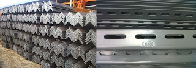

Jual Genteng Metal di Palu ☎ 0822 4582 0777 (Rinanti)
Pada kesempatan kali ini, kami berkesempatan untuk membahas beberapa produk tentang atap. Bisakah anda membayangkan bagaimana sebuah bangunan tanpa atap? Apakah kita masih bisa menyebut bangunan tersebut sebagai bangunan? Mungkin lebih tepat bila kita menyebutnya bangunan yang terbengkalai. Namun, bagaimana dengan bangunan kecil, sedang maupun besar? Jangan khawatir tentang hal tersebut, banyak sekali jenis atap yang dapat anda jadikan sebagai referensi pilihan atap bagi bangunan yang anda bangun. Salah satunya adalah atap galvalum, atap lengkung maupun genteng metal. Jadi simaklah baik-baik apa saja yang akan saya ulas dalam artikel berikut ini. Maka simaklah artikel yang akan saya ulas berikut ini. Apa yang terjadi? Tentu anda tahu, atap tersebut tidak akan bertahan lama dan bahkan bisa langsung roboh karena tidak adanya pondasi yang menyangganya.
Distributor & Supplier Genteng Metal

Penggunaan genteng metal Palu memiliki kelebihan seperti tidak adanya biaya perawatan karena genteng tidak akan berkarat, jamur ataupun pecah. Namun sedikit demi sedikit orang mulai lebih memilih genteng metal Palu karena lebih banyak kelebihan yang dimilikinya. Selain itu genteng metal Palu dinilai lebih anti bocor. Genteng metal pasir adalah genteng yang memiliki bobot yang ringan tetapi memilki kekuatan yang tinggi sehingga genteng metal Palu pasir adalah genteng yang memilki kualitas yang terbaik dibandingkan dengan genteng metal Palu lainnya. Anda cukup menghubungi contact person yang sudah tertera di setiap industri yang anda butuhkan. Warnanya pun beragam sehingga akan membuat rumah maupun bangunan yang dinaunginya menjadi terlihat lebih modern dan berbeda dibandingkan dengan rumah-rumah lain di sebelahnya.
Info Pemesanan Selengkapnya
Google Maps: https://www.google.com/maps/d/u/0/viewer?mid=18K_Vf8GKnjN9AtE2jUMATDSYvScojDst&ll=-7.269373870070218%2C112.655575&z=16
Note: https://www.facebook.com/notes/distributor-of-industrial-supply/pabrik-supplier-genteng-metal/1783191985314014/
Event: https://www.facebook.com/events/1480458558737554/
Portfolio Produk: https://www.facebook.com/pg/DistributorOfIndustrialSupplyDIS/photos/?tab=album&album_id=1683750531924827
Distributor & Supplier Besi Beton

Besi beton adalah besi yang digunakan untuk penulangan konstruksi beton atau biasa dikenal sebagai fungsi badan bertulang. Berbagai macam tipe tersebut bisa Anda gunakan untuk pembangunan. Pengaplikasian besi beton pada suatu bangunan kini telah banyak digunakan karena banyak keunggulan yang diberikan oleh Besi beton.
Besi beton terkenal sebagai bentuk besi yang memiliki kekuatan besar dan tahan terhadap berbagai guncangan dan tekanan.
Kedua jenis besi beton di atas dapat anda beli dengan mengunjungi situs dis.or.id. Anda bisa mendapatkan besi beton dengan harga yang sangat murah dan terjangkau. Karena, disan anda bisa mendapatkan besi beton yang anda inginkan yang pastinya sesuai dengan yang anda ekpetasikan. Jadi, anda tidak perlu ragu lagi.
Distributor & Supplier Steel Grating

Grating merupakan jenis baja yang bisa dibentuk kotak-kotak ataupun bilah yang antar bagiannya saling membentuk hubungan. Salah satunya dengan menggunakan grating dalam kombinasi pembangunan. Sehingga ketika Anda akan mencari Plat Grating bisa melakukan order pada toko bangunan penyedia barang ini. Grating tersebut sangat bermanfaat dan penting untuk keamanan Anda. Tentunya dengan berbagai model dan tipe yang beragam. Dengan mencaro steel grating kualitas terbaik, pastinya kualitas bangunan yang anda bangun akan lebih kokoh dan tahan terhadap berbagai cuaca. Plat Grating dapat Anda temui dimana saja.
Maka dari itu, jika anda membutuhkan steel grating untuk keperluan pembangunan, anda bisa langsung saja mengunjungi dis.or.id. Karena disana anda bisa mendapatkan steel grating yang berkualitas dan harga yang ditawarkan pun sangat terjangkau dan pastinya cocok untuk kantong anda.
Distributor & Supplier Pipa (Hitam/Gas, Galvanis)

Pipa hitam gas galvanis pemanfaatannya sangat berbeda dengan jenis pipa pada umumnya, banyak sekali manfaat yang diperoleh dengan mengaplikasikan jenis pipa ini. Pipa hitam banyak digunakan untuk kebutuhan konstruksi bangunan karena ia kokoh dan tahan karat karena sudah terlapisi dengan lapisan stainless steel. Pipa hitam galvanis telah di produksi khusus untuk kebutuhan pertambangan minyak dan gas, maka tak heran bila banyak orang yang menyebut pipa hitam adalah pipa gas. Sifatnya yang tahan karat menjadikan pipa ini dapat diaplikasikan disegala perubahan cuaca Indonesia. Tentukan kebutuhan pipa hitam anda pada kami, tersedia ukuran ½ inc sampai 40 inc. Anda dapat mengkonsultasikan keperluan pipa hitam tersebut pada kami dan mengetahui informasi harganya lebih detail.
Distributor & Supplier Kawat Bronjong/Gabion

Kawat bronjong bisa bertahan sangat lama karena kawat ini tidak mudah berkarat. Umumnya, kawat ini dipasang di tebing yang rawan sekali mengalami longsor, terutama ketika musim hujan tiba. Maka dari itu, kekuatannya untuk menahan tebing tinggi yang mungkin bisa longsor tidak perlu dipertanyakan lagi.
Jika anda sedang mencari kawat bronjong, anda bisa datang dan mengunjungi situs dis.or.id.
Distributor & Supplier WF H-beam

Besi WF kini menjadi jenis baja struktural yang banyak dikenal masyarakat saat ini. Besi ini dijual dengan harga yang cukup murah dan terjangkau sehingga tidak terlalu mahal. Kekuatan yang dimiliki oleh besi ini memang terbukti kuat dan sangat tinggi. selain itu, besi ini ternyata memiliki kualitas yang terjamin sehingga tidak diragukan lagi. Di samping itu, besi ini juga mempunyai sisi padat yang bagus.
Ada baiknya anda langsung mengunjungi dis.or.id. Segera kunjungi situs tersebut dan dapatkan penawaran menarik. Pastinya dengan harga yang sangat terjangkau.
Distributor & Supplier Expanded Metal

Expanded metal ini bisa dibilang sebagai hasil dari kemajuan teknologi yang terbuat dari baja berkadar karbon rendah dengan kekuatan yang lebih tanpa harus di las serta tanpa menggunakan sambungan. Fungsi expanded metal diantaranya untuk anak tangga pada tower dan ternyata banyak juga digunakan di dermaga/pertambangan/konstruksi lepas pantai. Beberapa keunggulan yang ditawarkan oleh expanded metal seperti ini adalah dikenal memiliki bentuk yang indah serta homogen, relatif lebih ringan, lebih vareatif dalam hal pengaplikasiannya, dan mudah sekali dipasang.
Kini anda bisa membeli expanded metal yang anda inginkan dengan mengunjungi dis.or.id. Jenis ini dapat Anda gunakan sebagai pengaman partisi, pagar pembatas, penutup mesin, tanduk kendaraan, dinding panel, angin-angin dan masih banyak lagi.
Distributor & Supplier Plat (Hitam, Kapal, Bordes, Strip)
.jpg)
Plat yang satu ini mungkin yang paling banyak kita jumpai, bukan sebagai plat bahan bangunan namun sering digunakan sebagai plat lantai pabrik, kendaraan dan berbagai fungsi lainnya. Pada umumnya disebut plate kapal dikarenakan biasa digunakan untuk bahan pembuatan badan kapal dan mempunyai standart spesifikasi material yang beragam untuk spesifikasi. Karena dis.or.id adalah distributor pertama yang langsung mengambil barang dari pabrik.
Disana terdapat berbagai macam plat yang anda butuhkan dan pastinya dengan harga yang sangat terjangkau.
Distributor & Supplier Floor Deck (Bondex)

Jika dibandingkan dengan triplek maupun bahan lain yang digunakan untuk membuat sebuah dek, ada beberapa kelebihan Floor Deck yang tidak dimiliki oleh beberapa bahan lain tersebut. Biasa di gunakan sebagai alas dalam proses pembuatan lantai dan atap dak beton. Panel Floordeck akan membentuk lantai kerja yang aman yang berfungsi untuk pelindung cuaca lantai bawahnya. Pemakaian dari floor deck juga bisa membuat proses pengerjaan dan pembuatan dak menjadi lebih mudah, cepat dan efisien. Pasak Floordeck yang berupa rusuk-rusuk panel tertanam dengan kuat didalam beton yang membuat seluruh panel menjadi tulangan positif searah yang sangat kuat.
Anda juga bisa langsung memesannya ataupun hanya ingin mengetahui detail harga yang di patok dari floor deck tersesbut. Pastinya dengan harga yang sangat terjangkau dan dengan mutu terbaik.
Distributor & Supplier Atap Galvalum

Dewasa ini, banyak orang yang menggandrungi atap galvalum dikala pembangunan. Apalagi bila ruangan tersebut tidak dilengkapi pendingin ruangan.
Primadona galvalum ini dinilai lebih efektif jika dibandingkan dengan galvanis. Patut anda ketahui, jenis baja yang saya maksud kali ini bukan baja berat seperti halnya alat berat, melainkan baja ringan, sehingga tidak akan membebani dinding rumah anda. Saat proses pemasangan rangka pada bagian atap.
Besar kecilnya galvalum tergantung pada kebutuhan anda. Jika beban atap tidak terlalu berat, maka galvalum kecil adalah solusi anda. Ada pula tanggapan yang mengatakan bahwa atap galvalum itu panas dan juga berisik. Bila anda mencari atap galvalum dengan berbagai ukuran, maka anda datang ke tempat yang tepat. Jika dalam segi harga, kayu memang lebih murah. Atap galvalum mempunyai banyak tipe, jenis dan ukuran yang sesuai dengan ukuran yang dapat anda pilih. Perbedaan ukurannya terletak pada panjang, lebar dan tebalnya.
Distributor & Supplier Atap Lengkung

Tidak terkecuali gudang, halte, maupun peneduh bagi kendaraan. Tidak hanya itu saja kegunaan atap lengkung.
Saat ini banyak sekali jenis atap dengan berbagai bahan dasar pembuatnya. Bahan penutup atap haruslah dari bahan yang kuat menahan berbagai macam kondisi cuaca. Jarang sekali kami melihat bahwa atap galvalum lengkung ini dapat jatuh karena tiupan angin kencang.
Karena apabila atap tersebut sudah tertembus oleh air. Anda pastilah pernah melihat bahwa atap di salah satu stadion itu berbentuk lengkungan. Atap galvalum yang satu ini mempunyai bentuk yang sangat unik. Karena kami adalah tangan pertama yang bertindak sebagai supplier, toko sekaligus distributor. Kunjungi dis.or.id dan kami akan siap membantu kebutuhan anda.
Distributor & Supplier Truss Canal C
Sudah tahukah anda apa yang dimaksud dengan galvalum? Galvalum memang istilah yang kerap kali kita dengar dan umumnya memang sangat erat kaitannya dengan baja. Jadi ketika anda mendengan istilah CNP, diharapkan anda tidak bingung atau merasa rancu lagi, karena pada dasar nya sama. Besi kanal C ini lebih banyak di pakai untuk atap sebuah rumah, terutama dalam membangun rangka atap nya. Besi kanal C bisa menjadi pilihan yang tepat bila anda ingin membangun rumah minimalis dengan desain modern. Bagi anda yang sedang mencari besi kanal C maka saya merekomendasikan anda untuk mengujungi dis.or.id. Bila anda mencari besi kanal c dengan kualitas tinggi namun harga terjangkau maka anda sudah datang ke tempat yang tepat. Disini kami menyediakan berbagai macam kanal c dan truss sesuai dengan kebutuhan anda.
Distributor & Supplier Hollow Galvalum

Apakah anda sedang membutuhkan atau mencari informasi seputar hollow galvalum? Penasaran dengan fungsinya? Harganya? Atau keterangan keterangan lainnya. Sederhananya, adalah pondasi atap yang tentunya diperlukan tepat dibawah pemasangan atap. Untuk memudahkan pemasangan atap, tentunya diperlukan hollow galvalum yang berkualitas bukan?
Bahan jenis ini memiliki banyak sekali kelebihan, selain tahan terhadap karat, hollow galvalum juga tahan terhadap serangan rayap dan juga memiliki beban yang cukup ringan. Untuk anda yang sedang membutuhkan hollow galvalum dalam jumlah kecil ataupun partai besar, dan sedang mencari hollow galvalum berkualitas harga murah. Pastikan untuk menghubungi kami saat ini juga. Tunggu apa lagi, silahkan hubungi customer service kami untuk melakukan pemesanan hollow galvalume. Mengapa kami bisa menjual lebih murah? Karena kami adalah distributor resmi dari pabrik, sehingga anda akan mendapatkan harga pabrik langsung dari kami. Oleh karena itu dibawah ini saya akan berbagi sedikit tips tentang cara pasang rangka plafon hollow. Tertarik untuk membeli? Hubungi kami sekarang juga, karena kami memiliki penawaran menarik untuk anda.
Distributor & Supplier Seng Gelombang

Apakah anda hendak mendirikan bangunan baru? Sebuah bangunan dapat berdiri tegak kokoh dan bernilai bukan cuman karena dinding dan permukaan lantainya saja. Seng gelombang sekarang ini diburu banyak masyarakat untuk menutup bagian atap bangunan mereka. Saking pentingnya, pasti dimana ada bangunan maka disitu ada atap yang menaunginya. Pemasangan seng pada atap rumah haruslah dibantu dengan kerangka kayu, atau bisa juga anda memanfaatkan kerangka galvalum yang kini sudah bermunculan di masyarakat dan lebih unggul di banding kerangka kayu sendiri.
Dengan beragam ukuran seng gelombang yang tersedia, pasti anda bingung kan manakah diantara ukuran tersebut yang cocok dan pas bila di aplikasikan pada atap bangunan anda? Seng gelombang untuk atap sebenarnya terbilang fleksibel. Meskipun mahal, namun kami yakin bahwa anda tidak akan menyesal dengan berbagai jenis seng gelombang yang tersedia.
Distributor & Supplier Plat Seng

Plat galvanis ini kebanyakan dijual secara lembaran, dan ada juga yang menjual nya per meter. Harga plat galvanis lembaran akan lebih mahal dibandingkan dengan harga per meter.
Banyak orang yang selama ini hanya membeli seng galvalum tanpa mengetahui ukuran yang sesuai dengan kebutuhan nya. Jika anda penasaran dengan harga plat galvanis ini, silahkan hubungi customer service kami untuk menanyakannya. Ketebalan plat tentu disesuaikan dengan kebutuhan, pastikan anda membeli plat galvanis dengan ukuran yang anda butuhkan, agar tentunya lebih efisien dalam hal anggaran.
Sebuah rumah tidak akan bisa disebut rumah jika dalam komponen nya tidak ada atap nya. Oleh karena itu, peran atap pada sebuah rumah sangatlah penting.
Distributor & Supplier Besi Wiremesh

Nama lain dari besi wiremesh ini adalah besi anyam. Struktur anyam dari besi wiremesh sendiri juga bermacam-macam, anda bisa sesuaikan dengan kebutuhan apakah struktur anyam kotak atau yang jajar genjang. Besi wiremesh bisa anda manfaatkan untuk berbagai kebutuhan, misalnya saja untuk kebutuhan konstruksi penguat dak beton, plat lantai, dan juga anak tangga. Tentu saja, tidak semua kebutuhan besi wiremesh bisa menggunakan jenis yang sama. Untuk ketebalan besi wiremesh 8 – 10 adalah peruntukkan untuk bangunan bertingkat. Kami disini menawarkan besi wiremesh dengan kualitas terbaik, di produksi dengan sistem las otomatis sehingga kuat dan susunannya rapi. Untuk anda yang membutuhkan besi ini maka hubungi kontak yang tersedia.
Distributor & Supplier Pagar BRC

British Reinforced Concrete / Pagar BRC merupakan pagar yang dibuat dari material beton dengan diameter variasi 5 mm – 8 mm tergantung dengan ukuran ketinggian. Potongan besi berdiameter tersebut kemudian digabungkan menjadi satu menggunakan mesin las wiremesh. Pagar BRC termasuk dalam kategori pagar yang siap pasang untuk melindungi berbagai bentuk bangunan anda. Untuk soal kekuatannya, pagar BRC dibuat dengan tegangan tinggi U55 grade yang memiliki tegangan ijin 2900kg/cm2 sehingga kekuatan yang ia miliki bahkan mencapai 2.
Distributor & Supplier Kawat Loket, Kawat Harmonika

Apakah anda membutuhkan kawat untuk penyekat? Kawat pagar? Penutup jendela? Atau kebutuhan lainnya? Untuk kebutuhan seperti ini anda bisa gunakan kawat loket harmonika yang memiliki bentuk seperti anyaman dan kuat. Jika dilihat dalam kehidupan sehari-hari kawat harmonika banyak diaplikasikan untuk kebutuhan industri, konstruksi, rumahan, dan lainnya. Sebagai distributor besi baja terlengkap di Indonesia, kami menawarkan produk kawat loket ini untuk anda, dengan diameter 1,5 mm – 4mm dengan ukuran lubang 20 mm – 70 mm. Kawat loket harmonika yang kami tawarkan berkualitas mutu tinggi sehingga cocok untuk berbagai keperluan, segera hubungi kami untuk informasi pemesanan!
Distributor & Supplier CNP & UNP

Besi yang sering diaplikasikan untuk keperluan sambungan dan dudukan atap adalah besi kanal UNP, bentuk besi ini melengkung dan membentuk huruf U. Selain sebagai sambungan, besi kanal UNP ini juga cocok dimanfaatkan untuk keperluan girts dan penutup sebuah dinding. Apabila anda amati sekali lagi, sebenarnya pemanfaatan dari besi UNP hampir mirip dengan WF, tapi karena besi UNP memiliki bentuk yang melengkung masih jarang orang yang memanfaatkan material ini untuk keperluan kolom bangunan. Sedangkan untuk besi CNP sendiri lebih banyak digunakan pada dinding cladding atau gording. Besi CNP memiliki bentuk yang hampir mirip dengan huruf C sehingga ia sering disebut sebagai profil C / balok purlin. Besi CNP sangat fleksibel karena materialnya dapat dimodifikasi dengan menggunakan plat koil. Pemanfaatannya bahkan bisa untuk keperluan otomotif.
Distributor & Supplier Besi Siku

Dalam dunia konstruksi, salah satu material yang cukup penting dan tidak boleh dilupakan adalah besi siku. Besi siku sangat dapat diandalkan untuk kebutuhan sebagai besi penyangga. Pada umumnya besi siku yang banyak digunakan dalam kehidupan sehari-hari adalah besi siku sama sisi, dimana ia membentuk dua garis tegak lurus yang membentuk 90 derajat. Ukuran panjang dari besi siku yang kami sediakan adalah panjang 6 meter, dan ketebalan yang bisa anda sesuaikan dengan kebutuhan. Jika anda membutuhkan besi siku ini, segera hubungi kami! Kami menjual besi siku yang kokoh dan tahan lama. Produk besi siku yang kami tawarkan cocok untuk beragam keperluan, baik rumahan, konstruksi, industri dan sebagainya. Butuh informasi lebih lengkap lagi? Kunjungi saja situs resmi kami di www.dis.or.id
Distributor & Supplier Hollow (Hitam, Galvanil, Galvanis)

Sekarang ini besi hollow pemanfaatannya sudah melebihi kayu, meskipun terbuat dari besi kualitasnya pun tidak dapat diragukan lagi.Sekarang sudah banyak orang yang beralih pemanfaatan dari kayu menjadi menggunakan besi hollow.Banyak orang yang mulai beralih dari pemanfaatannya yang menggunakan kayu beralih pada hollow hitam galvanil.Besi hollow saat ini menjadi material pengganti kayu yang sangat baik. Dengan menggunakan material ini pembangunan konstruksi juga bisa selesai lebih cepat sehingga meminimalkan upah pekerja. Dis.or.id pun telah menyediakan produk besi hollow hitam galvanis ini untuk dapat anda pesan langsung! Tersedia ukuran besi hollow 40 x 40 x 2 mm x 6 Meter, 50 x 50 x 3 mm x 6 Meter hingga ukuran 150 x 150 x 5 mm x 6 meter dan masih banyak lagi.
Distributor & Supplier Pipa Pancang

Pipa pancang yang memiliki fungsi cukup penting dalam sebauh proyek tentu saja tersedia di sini. Sedangkan dari namanya saja tetu sudah sangat familiar dengan konstruksi yang satu ini. Tidak dapat di pungkiri lagi, fungsi pipa pancang ini sangatlah penting. Salah satu yang di maksud adalah DIS. Selanjutnya, bagi Anda yang ingin mendapatkannya, jangan khawatir karena saat ini banyak sekali distributor penawar pipa pancang. Dengan demikian, ketika di gunakan pun bisa semakin maksimal. Dengan demikian Anda akan mendapatkan pipa pancang berkualitas.
Jasa Pondasi Bor (Strouss/Borepile)

Kini untuk memasang pondasi rumah yang sesuai dengan hasil memuaskan, jangan khawatir karena Anda tidak perlu mengkhawatirkan nya lagi. Dalam hal ini, sekarang Anda tidak pelru khawatir karena ada banyak jasa yang melayani jasa pondasi bor. Selanjutnya, untuk masalah di mana jasa ini bisa di temukan, maka Anda bisa memesannya di sini dengan mudah. untuk masalah kualitas pun tidak perlu di pertanyakan lagi karena hasilnya akan sangat terjamin mengingat pelakunya adalah mereka yang sdah berpengalaman dan merupakan jasa profesional. Jika mengenal pengeboran lebih jauh, sebenarnya ada dua jenis yakni manual dan otomatis dengan penggunaan mesin. Mengenal lebih jauh tentang pondasi bor, sebenarnya ada dua jenis pengeboran di sini, yakni pengeboran manual dan mesin.
Distributor & Supplier Genset (New/Second)

Sebagai penghasil tenagan listrik kini genset sudah banyak di kenal dan di aplikasikan. Sedangkan dalam pengaplikasian tersebut, tenaga dari genset di hasilkan dari bahan bakar solar. Dan keduanya pun bisa Anda dapatkan di DIS.
Selanjutnya, untuk masalah harga, memang terbilang cukup mahal. Hal ini pun menjadi sebab banyak yang lebih memilih pembelian genset yang bekas. untuk merk nya pun, genset juga variatif.
Distributor & Supplier UPS

UPS saat ini sebenarnya telah banyak di gunakan. Sedangkan pengertian UPS sendiri merupakan salah satu dari sekian banyak alat elektronik yang mampu di jadikan sebagai sumber listrik sementara manakala sumber utamanya terputus. Sedangkan UPS sendiri merupakan sebuah alat elektronik yang mampu akan menjadi sumber listrik pengganti sementara jika sumber utamanya terputus. Sejauh ini tentu saja akan sangat penting memiliki UPS terutama bagi pengguna komputer. Sedangkan dari jenisnya sendiri, UPS memang sangatlah bervariasi. Sedangkan segi varian nya bisa jadi adalah kualitas UPS sendiri maupun kapasitas yang di miliki. Baik dari segi kualitas maupun kapasitas yang di milikinya. Kalau untuk penjualannya sendiir, bisa di dapatkandi DIS dengan kualitas yang sangat memadai. Sedangkan dalam penjualan, di sini kami menawarkan UPS dengan kualitas terjamin dan harga memadai. Untuk tingkat ketahanan nya pun juga cukup tinggi sehingga bisa lebih menguntungkan.
Distributor & Supplier Forklift (Second)

Dalam setiap industri, baik itu industri kecil, menengah, hingga yang besar, tentu saja akan banyak yang menggunakan forklif. Mulai dari industri kecil, menengah hingga yang tergolong besar. mengimbangi akan hal itu, tidak heran jika kini penjualan forklif ada di mana-mana. sedangkan dari sisi kualitas barang yang di tawarkan di sini, jangan khawatir karena tentu saja akan sangat memuaskan. Bahkan meskipun bekas, bisa terlihat seperti baru.
Jasa Pembuatan Moulding Inject

Anda sedang bingung untuk membuat plastik yang tepat sebagai wadah salah satu produk Anda, maka jangan khawatir karena banyak jasa yang bisa di manfaatkan untuk pembuatannya termasuk di DIS. Di sini pun Anda bisa mendapatkan jalan keluarnya. Selain itu, masalah kualitas pun juga tidak kalah karena moulding inject yang di hasilkan memiliki kualitas terbaik. Selain itu dari segi kualitas pun juga merupakan moulding dengan kualitas yang tinggi. Anda pun bisa memilih kira-kira ide seperti apa yang paling pas untuk produk Anda sehingga pembuatannya bisa tepat sasaran.
Jasa Pembuatan Sparepart Mesin Produksi / Alat Berat

Sparepart tentu saja sudah tidak asing lagi di dunia permesinan. Terlebih jika mengingat lebih jauh bahwa alat ini memiliki fungsi yang cukup penting sehingga membutuhkan perhatian tinggi dalam pembuatannya. Dengan demikian hasilnya pun akan lebih terjamin dan aman. Terkait dengan hal itu, perlu Anda ketahui bahwa pembuatan sparepart yang salah, bisa jadi akan membahayakan si pengguna. Oleh karena itulah di butuhkan hasil berkualitas sehingga bisa bekerja secara maksimal. Sedangkan untuk masalah harga, tentu saja sangat variatif. DIS pun juga akn menawarkan jasa yang bisa menghasilkan alat berat secara sempurna.
Jasa Service Elektronik (Kompor Gas, Dispenser, Mesin Cuci)

Kini elektronik memang semakin banyak di gunakan di kalangan masyarakat. Jadi ketika terasa ada yang salah dengan barang-barang elektronik Anda, jangan khawatir karena di sini Anda bisa memperbaiki dan mendapatkan hasilnya seperti sedia kala. Jadi, dengan menggunakan jasa ini, Anda akan mendapatkan kembali fungsi dari beberapa elektronik yang rusak tersebut. Sedangkan untuk masalah kualitas yang di tawarkan DIS, jangan khawatir karena tingkat keamanan dan perbaikannya sangat tinggi dna terjamin. Nah, selain perbaikan sebenarnya dalam service Anda bisa juga sekedar melakukan pengecekan terhadap barang elektronik Anda yang di gunaka sehari-hari sehingga tetap aman dan nyaman. Sedangkan untuk service ini sebenarnya tidak hanya untuk barang-barang bermasalah saja melainkan juga untuk pegecekan barang elektronik Anda sehingga akan tetap aman dan lancar di gunakan. Hanya saja kebanyakan orang memang melakukan service elektronik saat ada keluhan yang di rasakan saja.
Banyak manfaat yang bisa didapatkan hanya dengan memasang atap sebagai peneduh bangunan anda. Dari yang modern sampai konvensional atap selalu ada di setiap bangunan. Tak terkecuali rumah dengan ukuran paling kecil sekalipun, pasti mempunyai atap sebagai komponen utama. Karena tujuan utama dari rumah adalah menaungi pengguna yang ada di dalamnya. Seperti yang saya jabarkan diatas fungsi atap sudah tidak terbantahkan dan tidak dapat digantikan lagi. Dengan senang hati, kami akan memberikan solusi untuk setiap kebutuhan dan keperluan anda. Apakah anda masih bingung dan tidak dapat memilih jenis atap yang sesuai dengan kebutuhan anda? Maka jangan ragu untuk mengunjungi dis.or.id, dengan senang hati kami akan memeberikan solusi untuk setiap kebutuhan anda.